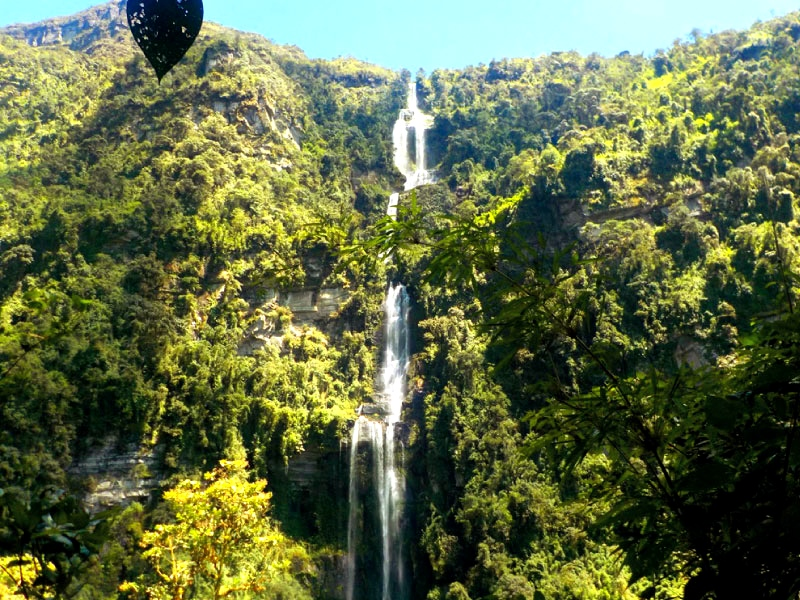

Cundinamarca,el rey de las alturas.
Choachí Cundinamarca queda ubicado aproximadamente a 50 minutos de Bogotá , en este pequeño y hermoso municipio queda ubicada la cascada más alta de Colombia, La sexta en Sudamérica y la 60 del mundo, con una altura de casi 600 metros, la Chorrera, como suele ser llamada, se posiciona como la número 1 en Colombia, sin duda alguna otra razón más para querer explorar las maravillas de Cundinamarca, rodeada de hermosos paisajes e imponetes aguas cristalinas.
La Chorrera (Choachi,C/marca)
Laguna ( Guatavita -C/marca)

Chocontá (Cundinamarca)

Biodiversidad de Cundinamarca
Explora por grupos
Animales
Plantas
Paisajes
Curiosidades
¿Sabías que el páramo de Ocetá Ubicado en Mongui - Boyacá es considerado el páramo más hermoso del mundo ?
¿Sabías que el páramo del Sumapaz Ubicado en Bogotá - Cundinamarca es el más grande del mundo ?
¿Sabías que la laguna de Tota Ubicada en el Departamento de Boyacá es la más grande de Colombia?